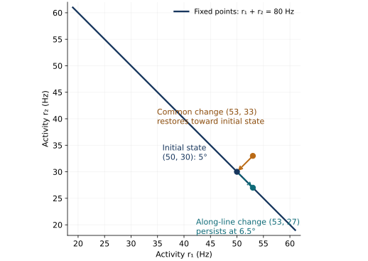
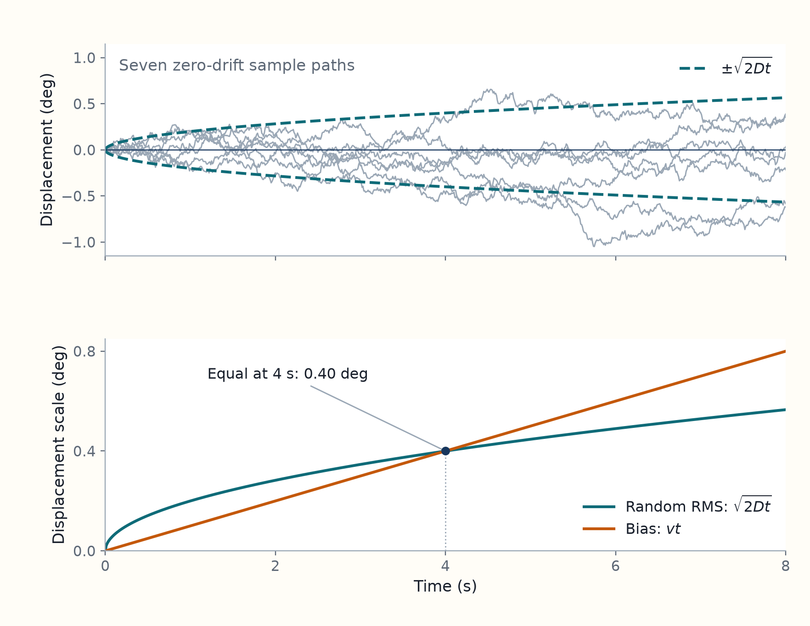
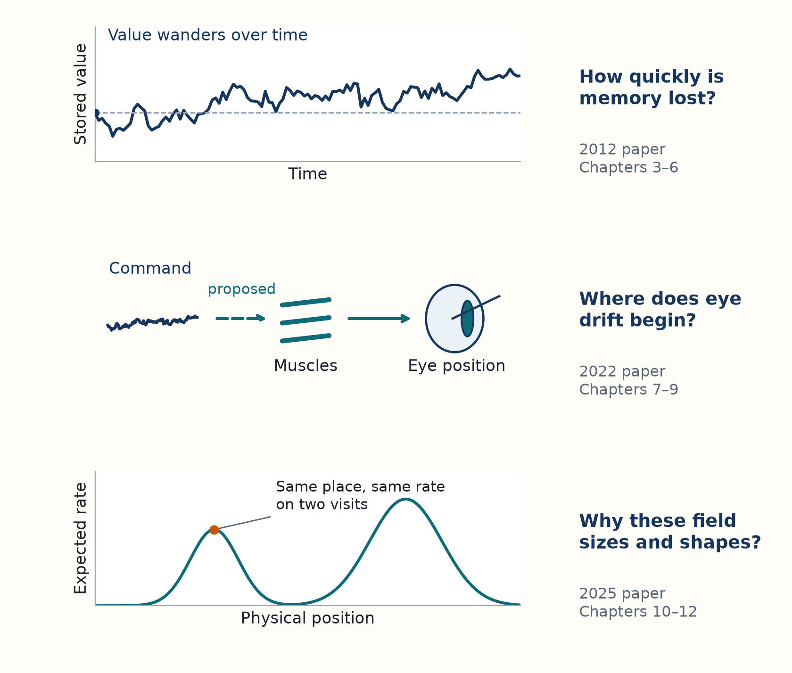

2 Stable representations can accumulate error
Explain the continuous family of states in the 2012 Results, then provide eye mechanics and the random-spreading background needed to understand how persistent activity can accumulate error.
[Paper 2012: Results setup, p. 2] The 2012 paper begins its analysis with a continuous family of steady neural activity patterns, described by Eq. 1 in Chapter 1. For neuron \(i\), the family obeys
\[ \bar s_i(\theta)=\tau\phi(\sum_jW_{ij}\bar s_j(\theta)+b_i)=\tau\bar r_i(\theta). \]
Here \(\theta\) is the represented value; \(\bar s_i\) and \(\bar r_i\) are steady activation and firing rate; \(W_{ij}\) couples neuron \(j\) to neuron \(i\); \(b_i\) is fixed input; \(\phi\) maps input to rate; and \(\tau\) is the common activation decay time. Each pattern represents a different value. Spike variability disturbs the activity, and the paper asks how the represented value changes as the network responds. Read the Results setup and Fig. 1.
[Interpretation] We first explain the geometry of the persistent states and use a small example to distinguish recovery of activity from preservation of the stored value. The eye mechanics that follow provide biological background. We then introduce the random spreading used in the paper and distinguish it from a spatial map that varies across position.
2.1 Results setup: stable activity with a vulnerable stored value
[Interpretation] Imagine a group of neurons maintaining a pattern that represents an eye angle after a movement command has ended. This explains the setup of the paper’s Results, Eq. 1 and Fig. 1, PDF p. 2. Random spikes disturb that pattern. Recurrent input can correct some disturbances by changing the cells’ firing back toward a persistent pattern. But if a disturbance produces the pattern for a different angle, an ideal memory circuit has no record of which angle was originally intended. Keeping a pattern stable is therefore different from keeping the stored value correct.
[Background] A circuit’s current activities are its state. A dynamical equation specifies how that state changes. A fixed point is a state where the deterministic rate of change is zero, as introduced in the mathematical-tools chapter. It is stable in a direction if a small disturbance in that direction decays.
[Paper 2012] Burak and Fiete model a continuous quantity using a family of persistent states, Results, PDF p. 2. Their Eq. 1 is
\[ \bar s_i(\theta)=\tau\bar r_i(\theta)=\tau\phi(\sum_j W_{ij}\bar s_j(\theta)+b_i). \]
For each value \(\theta\), firing replenishes activation at the rate it decays, so the pattern can persist without a cue. The bar denotes the ideal steady state without spike noise. Noisy activation usually lies near, rather than exactly on, this family. The authors assign it the coordinate \(\theta\) of the fixed point it would reach if noise were turned off and deterministic dynamics continued.
[Interpretation] A continuous attractor is a continuous family of fixed points with restoring dynamics toward the family and a neutral direction along it. Neutral means that there is no restoring force along that direction in the ideal deterministic model. The family is an attractor manifold. Its dimension counts independent coordinates represented on it, rather than neurons in the circuit. A line attractor has one represented coordinate. A ring can represent a periodic coordinate such as heading.1
[Example] The two-cell model below is an illustrative construction. The difference between its firing rates represents the angle. Raising both rates equally leaves that difference unchanged. The model’s feedback removes the common increase. Raising one rate while lowering the other changes the represented angle. That second change persists. The calculation makes these two responses explicit. It is not a fitted biological circuit.
Example: two disturbances to the same stored angle
[Example] Consider a teaching model with two activities \(r_1,r_2\) in spikes per second. Let \(b=40\) spikes per second and let \(k=2\) spikes per second per degree. A stored angle \(\theta\) corresponds to
\[ r_1=b+k\theta,\qquad r_2=b-k\theta. \]
The fixed points lie on the line \(r_1+r_2=2b\). Restrict attention to angles where both rates remain positive. Define the deviation in their mean activity and the represented angle as
\[ x=\frac{r_1+r_2}{2}-b, \qquad \theta=\frac{r_1-r_2}{2k}. \]
Suppose each activity changes according to
\[ \dot r_1=-a x,\qquad \dot r_2=-a x, \]
where \(a>0\) has units inverse seconds. Adding and subtracting these equations gives
\[ \dot x=-a x,\qquad \dot\theta=0. \]
The first equation has solution \(x(t)=x(0)e^{-at}\), so disturbances in the common activity decay. The second equation retains any angle set by the initial state.
[Interpretation] Increasing \(a\) shortens the recovery time \(1/a\) for the common activity disturbance. It does not correct the angle error, because \(\dot\theta\) is still zero. At fixed rate disturbance, a larger tuning slope \(k\) gives a smaller decoded angle change through division by \(2k\). Changing \(k\) in an actual circuit may also change its dynamics.
At \(\theta=5\) degrees, the rates are \((50,30)\). Compare two disturbances from this same state:
- A disturbance of \((+3,+3)\) changes the rates to \((53,33)\). It creates \(x=3\) but leaves the represented angle at 5 degrees. The restoring dynamics return to \((50,30)\).
- A disturbance of \((+3,-3)\) gives \((53,27)\), with \(x=0\) and angle \(26/(2\times2)=6.5\) degrees. This state lies on the fixed-point line, so there is no restoring response.
In the second case, the circuit remains coherent while holding the wrong angle.
The two changes occupy different directions in the activity plane. The solid arrow in the figure is the restoring motion produced by the model. The dashed arrow shows the imposed disturbance along the fixed-point line, rather than a deterministic restoring flow.

[Interpretation] In a larger network, the lasting change depends on its connection weights and cannot always be found by an ordinary perpendicular projection. The network calculation derives the correct projection from the network’s linearized dynamics.
[Paper 2012] The authors simulate a two-unit mutual-inhibition network in Fig. 2E–G, PDF p. 3; they specify its dynamics in Network Simulations, p. 6. The weights are \(W_{11}=W_{22}=0\) and \(W_{12}=W_{21}=-1\), both units receive the fixed input \(b=5000\), the activation time constant is \(\tau=100\) ms, and the transfer rule is \(\tau\phi(g)=g\) in the active range. The steady family satisfies \(2\tau(\bar r_1,\bar r_2)=(b+\theta,b-\theta)\), so \(\theta=\tau(\bar r_1-\bar r_2)\). The predicted local diffusion coefficient for \(\theta\) is \(D=b/(2\tau)\); simulated firing-rate differences show the corresponding random spreading. This is a numerical test of the model prediction, not a fit to biological recordings.
[Derivation: the two-unit diffusion] In this linear active range, \(\theta=s_1-s_2=\tau(r_1-r_2)\): subtracting the two activation equations cancels their deterministic drift. Conditional on the present state, independent Poisson spikes from the two units give the variance of their difference over \(dt\) as \((\bar r_1+\bar r_2)dt\). Along the steady family, the two displayed rate equations give \(\bar r_1+\bar r_2=b/\tau\). Therefore
\[ \operatorname{Var}[\theta(t)-\theta(0)]\simeq\frac{b}{\tau}t=2Dt, \qquad D=\frac{b}{2\tau}. \]
The local approximation assumes the active linear regime and neglects boundary effects. For the plotted rate difference rather than \(\theta\), the diffusion coefficient is divided by \(\tau^2\), because \(r_1-r_2=\theta/\tau\).
[Derivation] This network has the same geometry as the example above. Over its positive linear firing range, its rate dynamics reproduce the example with common-mode decay rate \(a=2/\tau\), where \(\tau\) is the synaptic decay time. The difference between the rates remains neutral. The network chapter uses synaptic activations to describe this network and gives the conversion between its coordinate and the angle used here. This small network illustrates one possible memory mechanism; the gaze-holding circuit also needs the motor and muscle stages described below.
2.2 Sustained muscle tension holds the eye against elastic restoring forces
[Background] Eye mechanics and the experiments described here give biological context. The folded mechanical calculation is a simplified model, not a derivation from the 2012 paper. The eye anatomy and motor pathway explain why holding an angle needs continuing muscle force. We now separate two questions: how that force balances the eye’s elastic pull, and how the brain maintains the command that produces it. The folded calculation answers the mechanical question; the experiments below test the neural one.
Mechanical calculation: what holds an angle, and what only slows its change
[Derivation] For a small angular range, a teaching approximation treats the eye as a rotating mass with a spring and viscous resistance. Let \(\phi\) be angle in radians measured from the position where the passive forces balance. Let \(I\) be the rotational inertia, \(B>0\) the viscous resistance, \(K>0\) the angular stiffness, and \(\tau_m(t)\) the net active muscle torque. The angular force balance is
\[ I\ddot\phi+B\dot\phi+K\phi=\tau_m(t). \]
The terms are torques: \(I\) multiplies angular acceleration, \(B\) multiplies angular velocity, and \(K\) multiplies displacement. This is a simplified approximation, not the full model of eye mechanics in Ben-Shushan et al. (2022). Real muscle force is nonlinear and depends on activation and movement history.2
At a held angle, \(\dot\phi=\ddot\phi=0\), so
\[ \tau_m=K\phi. \]
The steady angle therefore depends on active torque and stiffness. At fixed torque, doubling \(K\) halves the angle in this linear model. Increasing \(I\) or \(B\) cannot replace the torque required to hold that angle.
If the active torque is removed, neglecting the relatively small inertial term gives
\[ B\dot\phi+K\phi=0,\qquad \phi(t)=\phi(0)e^{-t/\tau_p},\qquad \tau_p=\frac{B}{K}. \]
Greater viscous resistance slows the return; greater stiffness speeds it up at fixed \(B\). Neither creates a choice of indefinitely held angles. Actual eye mechanics include several relaxation times, so \(\tau_p\) is an effective timescale in this simplified calculation.
[Background: neural holding] The brain maintains the holding command. The oculomotor integrator converts movement commands into a maintained eye-position signal. This signal sustains the motor output after a saccade. The name refers to accumulating an eye-velocity command over time into a position signal. In monkeys, Cannon and Robinson (1987) reversibly disrupted brainstem regions involved in this function. Horizontal gaze then drifted back with a time constant of about 0.2 s, compared with more than 20 s before disruption in darkness. The muscles alone did not provide the original persistence.3
Visual feedback can correct gaze errors, and signals from the inner ear help compensate for head motion. Holding can nevertheless continue in darkness, so immediate visual correction is not the whole mechanism. Plasticity is a lasting, experience-dependent change in neural responses or connections. It can adjust how well the holding circuit is calibrated. Major et al. (2004) altered visual feedback in goldfish and trained their gaze holding toward drift or instability over tens of minutes to hours; normal feedback could reverse the change. That is a change in neural control over a longer timescale, distinct from the immediate elastic and viscous response of the tissues. The experiment did not identify the exact cellular learning rule.45
[Interpretation] The attractor model above isolates the neural question of how a circuit can preserve an activity pattern while losing the angle that pattern was supposed to hold. The next section connects those lasting changes to random spreading.
2.3 Independent steps with equal duration and variance give linear variance growth
[Paper 2012] Each extra or missing spike changes synaptic input. After the circuit has corrected the disturbances it can remove, a small change in the represented angle may remain. The authors relate these lasting changes to spreading in Diffusive Drift, PDF p. 2, and supporting text, section III, PDF pp. 6–9. Repeating this process makes trials that began at the same angle gradually spread apart. For negligible systematic drift and a nearly constant local diffusion coefficient \(D\), their short-time result is \(E[(\theta(t)-\theta(0))^2]\simeq2Dt\). The interval must also be long enough for rapidly restoring disturbances to decay. The formula describes local random spreading; at long times, boundaries and changes in \(D\) can alter it.
[Derivation] We first model these lasting changes as independent, with no preferred direction and a constant variance per unit time. These are assumptions about the surviving changes, not about complete spike trains.
[Background] Brownian motion \(W(t)\) models the accumulated effect of many small fluctuations. It starts at zero, has continuous paths and independent Gaussian increments with mean zero, and satisfies \(\operatorname{Var}[W(t)-W(s)]=t-s\) for \(t\geq s\). The independence concerns changes over disjoint time intervals. A physical network need only approach this description over the time and noise scales relevant to the calculation.
[Derivation: independent steps] Divide time into intervals of length \(\Delta t\). Let \(\xi_j\) be the change in the represented coordinate during interval \(j\). The calculation assumes:
- Increments are independent.
- Each increment has mean zero.
- Each increment has variance \(2D\Delta t\), where \(D\) has units coordinate squared per time.
Let \(\theta_n\) be the represented value after \(n\) intervals and \(\theta_0\) its starting value. After \(n\) intervals,
\[ \theta_n-\theta_0=\sum_{j=1}^{n}\xi_j, \qquad \operatorname{Var}(\theta_n-\theta_0) =\sum_{j=1}^{n}\operatorname{Var}(\xi_j) =2Dn\Delta t. \]
Writing \(t=n\Delta t\) gives linear variance growth \(2Dt\). The continuous approximation expresses this accumulated change through Brownian motion.
Mathematical model: Brownian motion
In this continuous diffusion approximation,
\[ \theta(t)=\theta(0)+\sqrt{2D}\,W(t), \qquad \mathbb E[(\theta(t)-\theta(0))^2]=2Dt. \]
[Interpretation] The diffusion coefficient \(D\) measures half the rate at which the variance of the stored angle grows. With independent, zero-mean increments of constant variance per unit time,
\[ \operatorname{Var}[\theta(t)-\theta(0)]=2Dt. \]
[Interpretation] Here \(D\) has units degrees squared per second when \(\theta\) is in degrees. More frequent retained disturbances, or larger ones at the same frequency, increase \(D\). At a fixed delay, doubling \(D\) doubles error variance and multiplies its standard deviation by \(\sqrt{2}\). A single memory trajectory can turn back even while the spread across trials grows. The network calculation obtains \(D\) from the spike variability and the lasting effect of each cell’s disturbance.
[Background] The mean squared displacement, or MSD, is the expected squared change across a lag. In the zero-mean diffusion just defined, MSD is \(2Dt\). A root mean squared displacement is its square root, \(\sqrt{2Dt}\), and has the same units as the represented coordinate. In several dimensions, adding independent coordinate contributions gives an overall MSD of \(2dDt\) only when each of the \(d\) coordinates has the same diffusion coefficient. A paper that defines its diffusion parameter as the entire two-dimensional MSD slope uses a different convention.
[Background] A systematic drift is a nonzero mean velocity. The eye paper’s term “fixational drift” names the eye’s slow motion between saccades, which can be largely random; it does not imply a nonzero mean velocity.
Example: why the noise grows slower than a fixed bias
[Example] Take an illustrative angular diffusion coefficient \(D=0.02\) degrees squared per second. At 0.35 s its variance is \(0.014\) degrees squared and its root mean squared displacement is 0.118 degrees, or about 7.10 arcminutes. At 1 s the root mean squared displacement is 0.20 degrees.
If there is also a constant bias velocity \(v=0.10\) degrees per second, then
\[ \theta(t)-\theta(0)=vt+\sqrt{2D}\,W(t), \qquad \operatorname{MSD}(t)=v^2t^2+2Dt. \]
The deterministic and random contributions are equal at \(t=2D/v^2=4\) seconds. Their equal contributions there are each \(0.16\) degrees squared. At longer times the bias dominates this unbounded model even though it was small over a short observation. A theory of random diffusion must account separately for this systematic drift.
Sample paths show the irregular motion. Exact displacement scales show how its spread differs from a fixed bias.

A constant bias grows linearly, so it eventually exceeds the square root growth of the random displacement scale. See Gaussian displacement density, SI Eq. S30, p. 7.
[Interpretation] A later memory state contains earlier accumulated errors as well as new ones. Observing it twice therefore does not give two independent copies of the original memory. The covariance calculation below quantifies the shared history used in the readout chapter.
Mathematical detail: why two times share accumulated noise
[Derivation] Two times along a Brownian path are correlated even though its increments are independent. For \(0\leq s\leq t\), write \(W(t)=W(s)+[W(t)-W(s)]\). The bracketed increment is independent of \(W(s)\) and has mean zero, giving
\[ \operatorname{Cov}(W(s),W(t)) =\operatorname{Var}(W(s))=s, \qquad \operatorname{Cov}(W(s),W(t))=\min(s,t). \]
The same argument gives covariance \(2D\min(s,t)\) for a diffusing coordinate started at a fixed value. This identity is the intermediate step needed to compute the error from averaging a memory that moves during readout. It also helps explain why smoothing a diffusive input is different from smoothing a stationary noise source.
[Interpretation] A finite range, a periodic coordinate, external feedback, or a position-dependent diffusion coefficient changes long-time behavior. For example, ordinary squared angular distance on a ring cannot keep growing linearly forever. The basic \(2Dt\) result is local or unbounded unless those conditions are treated separately.
2.4 A fixed spatial map differs from a value that wanders over time
[Interpretation: time and space] The memory and eye papers study fluctuations that accumulate as time passes. This comparison connects the 2012 question to Mainali and colleagues’ 2025 place-field model; it is not a result jointly established by the papers. The place-field paper instead starts with a random function of physical position. Once drawn for a cell and an environment, that function is fixed while the animal moves through the map. Revisiting a place evaluates the same expected-rate function, although the actual spikes can still vary from visit to visit.
These two kinds of randomness can occur together. A circuit may maintain a position estimate with time-dependent noise, while downstream cells respond to position through irregular but repeatable tuning curves. Observing irregular spatial maps does not tell us how fast the maintained position drifts. Conversely, finding diffusion of a stored value does not determine the shapes of individual place fields. The following chapters develop the dynamical calculation first, then the experiment that tests a possible consequence, and finally the spatial statistics.6
The three questions can now be placed beside the kind of variation each paper studies.

[Interpretation] The rows compare different questions. They do not establish one circuit connecting all three papers.
Burak, Y., and Fiete, I. R. (2012). Fundamental limits on persistent activity in networks of noisy neurons. Proceedings of the National Academy of Sciences, 109(43), 17645–17650. DOI. Introduction, Fig. 1, and SI I–III. The two-activity example is an illustrative construction showing the geometry, not the paper’s simulated network. ↩︎
Anderson, S. R., Porrill, J., Sklavos, S., Gandhi, N. J., Sparks, D. L., and Dean, P. (2009). Dynamics of primate oculomotor plant revealed by effects of abducens microstimulation. Journal of Neurophysiology, 101(6), 2907–2923. DOI. Introduction and stimulation/relaxation results. The spring-and-damper calculation is an independent reconstruction of the physical roles, not a fitted reproduction of these experiments.↩︎
Cannon, S. C., and Robinson, D. A. (1987). Loss of the neural integrator of the oculomotor system from brain stem lesions in monkey. Journal of Neurophysiology, 57(5), 1383–1409. DOI. Abstract reports the reversible disruption and gaze-holding time constants.↩︎
Dragoi, V. (2026, July 7 review). Ocular Motor Control. Neuroscience Online, Section 3, Chapter 8, McGovern Medical School, UTHealth Houston. Sections 8.2–8.3 and Fig. 8.1. Anatomy, muscle innervation and visual/vestibular control.↩︎
Major, G., Baker, R., Aksay, E., Mensh, B., Seung, H. S., and Tank, D. W. (2004). Plasticity and tuning by visual feedback of the stability of a neural integrator. Proceedings of the National Academy of Sciences, 101(20), 7739–7744. DOI. Fig. 1 for movement and holding signals; Figs. 2–4 and Discussion for goldfish training, reversibility and unresolved cellular mechanisms.↩︎
Mainali, N., Azeredo da Silveira, R., and Burak, Y. (2025). Universal statistics of hippocampal place fields across species and dimensionalities. Neuron, 113(7), 1110–1120.e3. DOI. Introduction, Results, and STAR Methods. The distinction between map randomness and visit-to-visit spike variation follows from what the model’s random function indexes. ↩︎